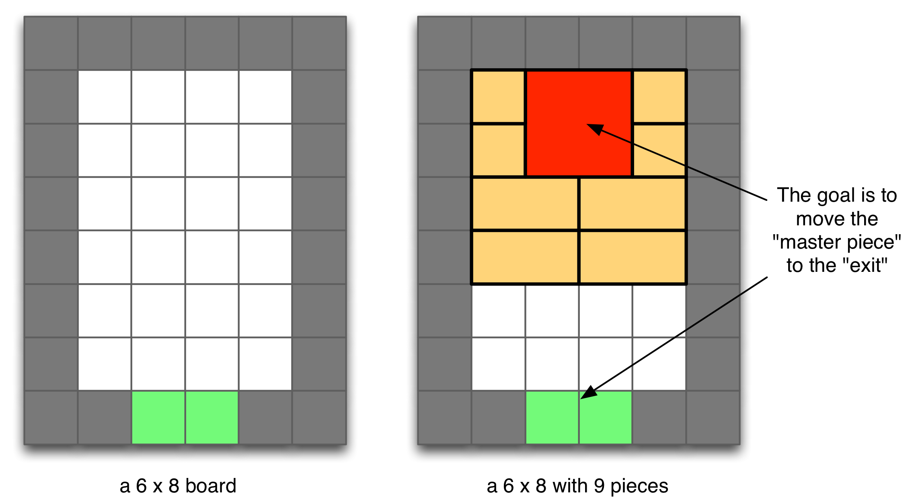
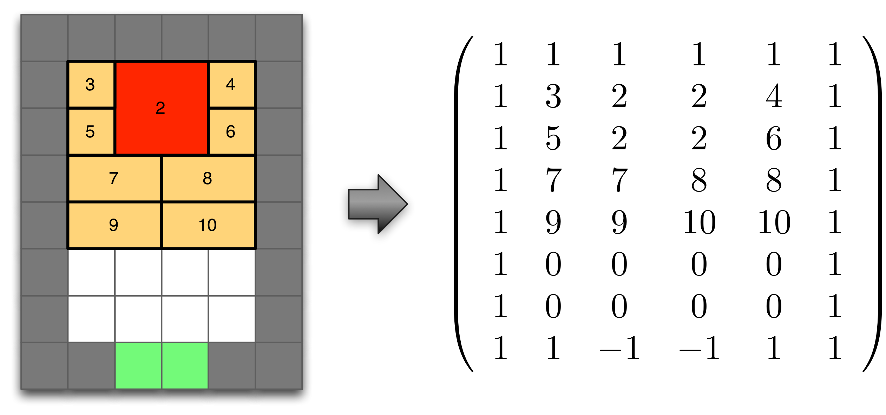
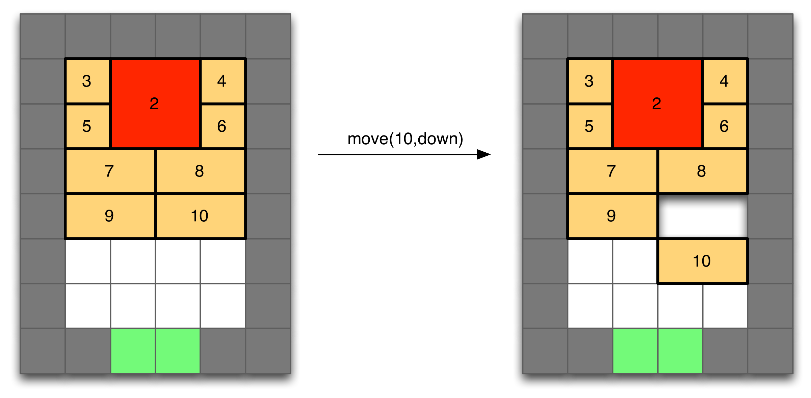
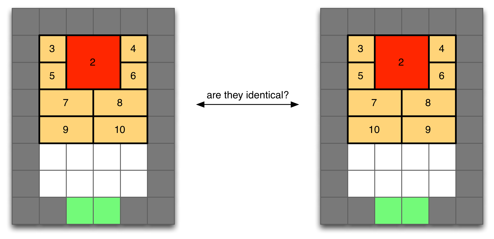
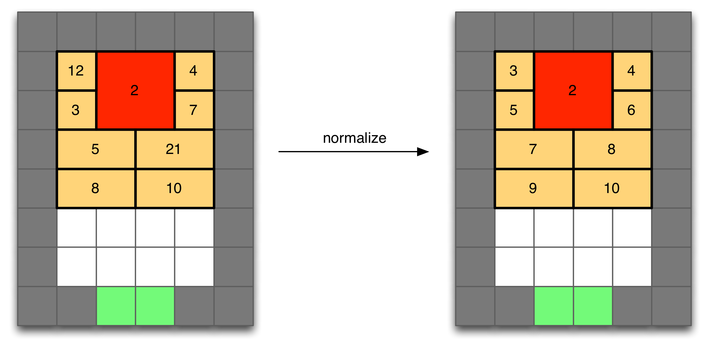

Part 1
Many of you might have played one or another version of the "sliding brick puzzle" (SBP). If you have not, you can play one here. And if you like it, you can play a rather challenging one here (although this last one, unfortunately, only runs on Windows machines). For the next several assignments, you will create a program that can solve the SBP. In this assignment you will just have to create data structures and functions to represent the game state, and perform the various needed operations such as: determining the set of valid moves, execute the moves or determine whether a we have solved the puzzle.
- A sliding brick puzzle is played on a rectangular w by h board (w cells wide and h cells tall). Each cell in the board can be either free, have a wall, or be the goal
- On top of the board (over some of the free cells) there is a set of solid pieces (or bricks) that can be moved around the board. One of the bricks is special (the master brick).
- A move consists of sliding one of the bricks one cell up, down, left or right. Notice that bricks collide with either walls or other bricks, so we cannot move a brick on top of another. Bricks can only slide, they cannot rotate nor be flipped.
- To solve the puzzle, we have to find a sequence of moves that allows you to move the master brick on top of the goal. No other pieces are allowed to be placed on top of the goal
Here is an illustration of a particular configuration of a SBP (but if you still do not understand how the game works, just see this video, or play the game in one of the links above)

You can complete this assignment in either Java or Python (if you like to to complete it in any other language please confirm it with the instructors first). Choose your programming language, and complete the following tasks:
1.A: State representation
In this task, you will write code to represent the game state, load a game state from disk, and display a game state in the screen. You will have to create a class (recommended) or just a set of functions for completing this task.
We will represent the game state as an integer matrix, as shown in this example:

The matrix will have the same dimensions as the game board, and each position in the matrix has the following meaning:
- -1: represents the goal
- 0: means that the cell is empty
- 1: means that there is a wall
- 2: means that the master brick is on top of this cell
- any number higher or equal than 3: represents each of the other bricks
Thus, as you can see, each piece in the board is assigned an integer: the master brick is assigned number 2, and the other bricks are assigned numbers starting from 3.
- Write a function that allows you to load a game state from disk. The input to the function should be just the name of the file. The file format that you have to use is the following:
w,h,
Row 1 of the matrix with values separated by commas,
...
Row h of the matrix with values separated by commas,
You can use these four files as examples: SBP-level0.txt, SBP-level1.txt, SBP-level2.txt, SBP-level3.txt.
- Write a function that outputs the game state in the screen. For example, if you load the file SBP-level0.txt, the display state function should output the following to the screen:
5,4,
1,-1,-1,1,1,
1,0,3,4,1,
1,0,2,2,1,
1,1,1,1,1,
- Write a function that clones a state. That is that returns a separate state that is identical to the original one.
1.B: Puzzle Complete Check
Write a function that returns true if a given state represent a solved puzzle (i.e. if the master brick is on top of the goal). Notice that checking this is very easy, since you only have to go over the matrix, and see if there is any cell with the value -1. If there is, that means that the puzzle is not solved, if there is not, then the puzzle is solved (since only the master brick can cover the goal cells).
For example, your function should return false with this SBP-level0.txt, but true with this SBP-level0-solved.txt.
1.C: Move Generation
Since each piece has a unique integer identifier, we will represent moves as a pair (piece,direction). Each piece can only move one cell at a time, in any of the four directions. For example a possible move in the following board is (10,down):

- Write a function that given a state and a piece, it returns a list of all the moves the piece can perform (notice that the list can be empty). Define a class or a struct to represent a "move". Feel free to encode the direction (up, down, left, right) however you want. For example, you can use a character to represent direction ('u','d','l','r'), or an integer. That is up to you.
- Write a function that given a state, it returns all the moves that can be done in a board (that is the union of the moves that each individual piece can perform).
- Implement a function 'applyMove' that given a state and a move, it performs the move in the state
- Implement a function 'applyMoveCloning' that given a state and a move, returns a new state, resulting from applying the move (i.e. first clones the state, and then applies the move).
1.D: State Comparison
Write a function that compares two states, and returns true if they are identical, and false if they are not. Do so using the simplest possible approach: just iterate over each position in the matrix that represents the state, and compare the integers one by one. If they are all identical, the states are identical, otherwise they are not.
1.E: Normalization
Notice that the previous state comparison function has a problem. Consider the following two states:

The previous function will consider these two states as different. However, it's quite obvious that the states are equivalent. In order to solve this problem, we are going to define a normal form for a state:
If we give an index to each cell in the board starting from the top-left corner and going down row by row from left to right (top-left corner has index 0, the cell right next to it has index 1, etc.), then we can assign an index I(b) to a brick b, as the smallest index covered by the brick. This is illustrated in the following figure:
Now, a state is in normal form if, given two bricks (that are not the master brick) with numbers n and m. If n < m then we know that P(n) < P(m).
Write a function that given a state, it transforms it into normal form. See the expected effect of this function in this image:

Notice that this is simpler than it seems. It can be done with the following algorithm:
int nextIdx = 3;
for(i = 0;i < h;i++) {
for(j = 0;j < w;j++) {
if (matrix[j][i]==nextIdx) {
nextIdx++;
} else if (matrix[j][i] > nextIdx) {
swapIdx(nextIdx,matrix[j][i]);
nextIdx++;
}
}
}
Where the swapIdx function simply does this:
swapIdx(int idx1,int idx2) {
for(i = 0;i < h;i++) {
for(j = 0;j < w;j++) {
if (matrix[j][i]==idx1) {
matrix[j][i]=idx2;
} else if (matrix[j][i]==idx2) {
matrix[j][i]=idx1;
}
}
}
}
This normalization function will be very useful in the following assignments to compare game states, and see if they are equivalent or not. You can test if your version works with this state SBP-test-not-normalized.txt. Make sure you obtain the same result as in the figure above.
1.F: Random Walks
Write a function that given a state and a positive integer N, does the following: 1) generate all the moves that can be generated in the board, 2) select one at random, 3) execute it, 4) normalize the resulting game state, 5) if we have reached the goal, or if we have executed N moves, stop; otherwise, go back to 1.
Please print both the move and the game state on screen after each iteration of the method. For example, loading the file SBP-level0.txt, and executing a random walk with N = 3, a possible output can be this:
5,4,
1,-1,-1,1,1,
1,0,3,4,1,
1,0,2,2,1,
1,1,1,1,1,
(2,left)
5,4,
1,-1,-1,1,1,
1,0,3,4,1,
1,2,2,0,1,
1,1,1,1,1,
(2,right)
5,4,
1,-1,-1,1,1,
1,0,3,4,1,
1,0,2,2,1,
1,1,1,1,1,
(3,left)
5,4,
1,-1,-1,1,1,
1,3,0,4,1,
1,0,2,2,1,
1,1,1,1,1,
Part 2
Using the code you wrote for part 1, write:
- A function that solves a given sliding bricks puzzle using a breadth-first strategy.
- A function that solves a given sliding bricks puzzle using a depth-first strategy.
- A function that solves a given sliding bricks puzzle using an iterative deepening search strategy.
Notice that the search space is a graph, so you will have to keep track of all the states visited so far, and make sure your algorithm does not get stuck in loops.
When the solution is found, it should be printed to screen. Print the list of moves required to solve the state, and the final state of the puzzle, for example (pay attention to spaces and newlines):
(2,left)
(4,down)
(3,right)
(2,up)
(2,up)
5,4,
1,2,2,1,1,
1,0,0,3,1,
1,0,0,4,1,
1,1,1,1,1,
Together with the source code, turn in (in a plain text file called 'output-hw1.txt') the output that your program generates for the following four levels: SBP-level0.txt, SBP-level1.txt, SBP-level2.txt, SBP-level3.txt. Also, at the end of your output file, output a line as below:
#nodes time length
where #nodes is the number of nodes explored, time is the time the search took in seconds and fractions of seconds (e.g., 2.53 for 2 seconds and 53/100) and length is the length of the solution found.
Using these search strategies, it is unlikely that your program handles puzzles much larger than the ones linked above. But in case you want to test out the limits of your program, you can use these more complex puzzles: SBP-bricks-level1.txt, SBP-bricks-level2.txt, SBP-bricks-level3.txt, SBP-bricks-level4.txt, SBP-bricks-level5.txt, SBP-bricks-level6.txt, SBP-bricks-level7.txt.
IMPORTANT: write all of the code above to be run from command line and to display its output to the console. Do not create any graphical user interfaces and do not ask the user for any input.
Part 3: Extra Credit (10 points)
Using the code you wrote for part 1 and 2, write a function that solves a given sliding bricks puzzle using A*.
As a heuristic, use the Manhattan distance between the master brick and the goal.
What to Submit
All homework for this course must be submitted electronically using Blackboard. Do not e-mail your assignment to a TA or Instructor! If you are having difficulty with your Blackboard account, you are responsible for resolving these problems with a TA, an Instructor, or someone from IRT, before the assignment it due. If you have any doubts, complete your work early so that a TA or someone from IRT can help you if you have difficulty. Remember that your code MUST run on TUX. Code that doesn't compile or run there will receive a grade of zero.
For this assignment, you must submit:
- Your Python/Java source code (make sure it is well commented and works on tux).
- Written documentation for your program including your name, what files are and what they contain, also the compilation and execution instructions. Also, in case you have not completed your assignment or it does not work as expected, remember to include what works and what does not.
- A Makefile or a Bash script named hw1.sh (for use on tux) in a way that
- Running the executable file named “hw1” generated by command “make” in the same directory
- Or running ./hw1.sh
must implement the main function and associated functions/methods described above on tux. (without this file, your code cannot be compiled nor verified)
- A plain text file called “output-hw1.txt” and generated on tux (very important!) which shows the output your program generates when run. You can easily generate this file using redirection, e.g.: “./hw1 > output-hw1.txt”.
- Use a compression utility so that you can compress your files into a single ZIP file (NOT RAR, nor any other compression format) and just upload it.
Grading Rubric: